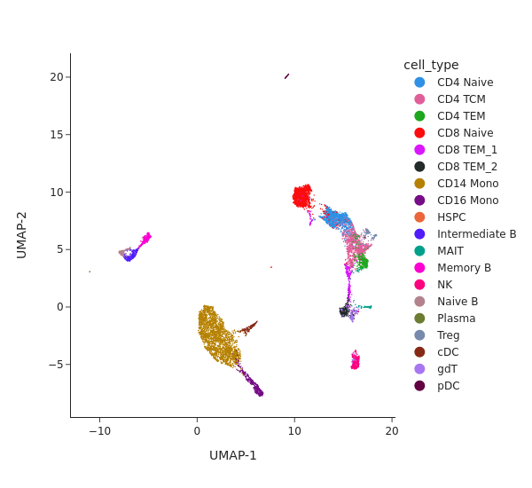
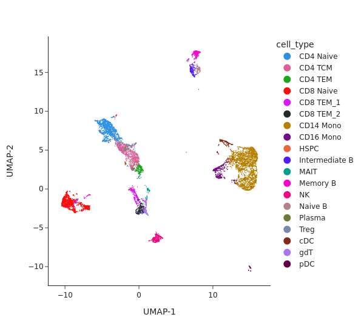
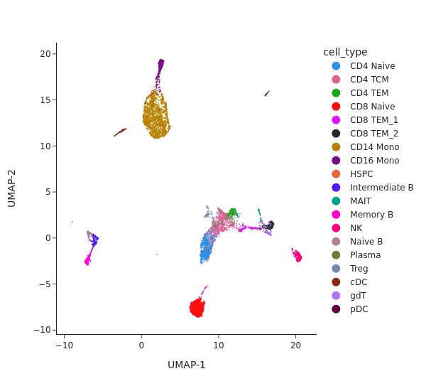

Multi-modality pipeline: analyzing single-cell multiome data (ATAC + Gene Expression)#
Introduction#
In this tutorial we will analyze single-cell multiome data data from Peripheral blood mononuclear cells (PBMCs). The dataset used in this tutorial can be found here: http://renlab.sdsc.edu/kai/10x-Multiome/.
In addition to SnapATAC2, we will utilize scanpy to preprocess the scRNA-seq data.
[1]:
import snapatac2 as snap
import scanpy as sc
Analyze gene expression data#
[2]:
rna = snap.read(snap.datasets.pbmc10k_multiome(modality='RNA'), backed=None)
rna
[2]:
AnnData object with n_obs × n_vars = 9631 × 29095
obs: 'domain', 'cell_type'
var: 'gene_ids', 'feature_types'
[3]:
sc.pp.highly_variable_genes(rna, flavor='seurat_v3', n_top_genes=3000)
rna = rna[:, rna.var.highly_variable]
[4]:
sc.pp.normalize_total(rna, target_sum=1e4)
sc.pp.log1p(rna)
/projects/ps-renlab2/kai/software/micromamba/lib/python3.9/site-packages/scanpy/preprocessing/_normalization.py:170: UserWarning: Received a view of an AnnData. Making a copy.
view_to_actual(adata)
[5]:
snap.tl.spectral(rna, features=None)
snap.tl.umap(rna)
[6]:
snap.pl.umap(rna, color='cell_type', interactive=False, height=550)
[6]:

Analyze chromatin accessibility data#
[7]:
atac = snap.read(snap.datasets.pbmc10k_multiome(modality='ATAC'), backed=None)
atac
[7]:
AnnData object with n_obs × n_vars = 9631 × 107194
obs: 'domain', 'cell_type'
var: 'feature_types'
uns: 'spectral_eigenvalue'
obsm: 'X_spectral', 'X_umap'
[8]:
snap.tl.spectral(atac, features=None)
snap.tl.umap(atac)
[9]:
snap.pl.umap(atac, color="cell_type", interactive=False, height=550)
[9]:

Perform joint embedding#
[10]:
assert (rna.obs_names == atac.obs_names).all()
[13]:
embedding = snap.tl.multi_spectral([rna, atac], features=None)[1]
2023-04-13 23:04:40 - INFO - Compute normalized views...
2023-04-13 23:05:44 - INFO - Compute embedding...
[14]:
atac.obsm['X_joint'] = embedding
snap.tl.umap(atac, use_rep='X_joint')
[15]:
snap.pl.umap(atac, color="cell_type", interactive=False, height=550)
[15]:
